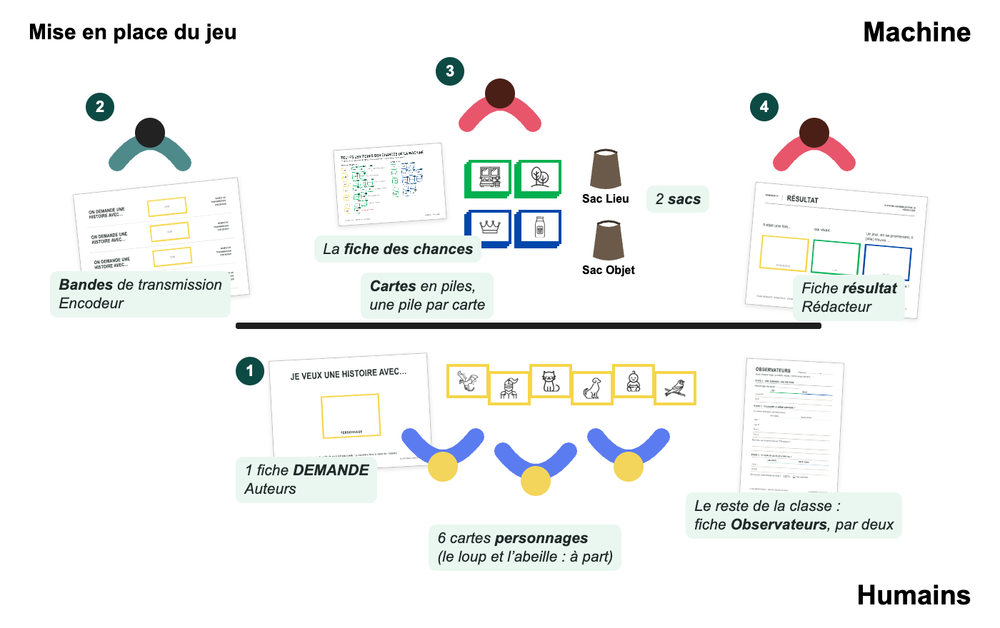
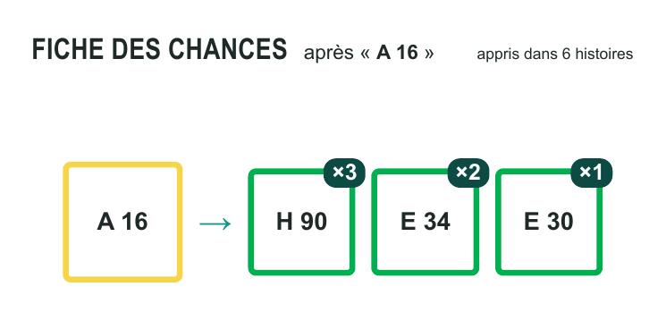

La Machine à Histoires
Module 2 · 7–10 ans (4–6P) · 42 min (ou 30 min) · 4 étapes · classe entière · matériel à imprimer
La classe devient une machine. Des Auteurs demandent une histoire ; l’Encodeur, le Calculateur et le Rédacteur la produisent un mot à la fois, avec des fiches des chances et un tirage au sort, sans jamais comprendre la demande.
L’idée à retenir : Une IA qui écrit ne comprend pas la demande comme nous : elle calcule ce qui est probable, puis tire au sort. Ce qui revient souvent dans ses données sort plus souvent. Ce qu’elle produit est plausible, pas vérifié.


Claudia, enseignante, te guide étape par étape : ce qui se passe dans le jeu, pourquoi, ce que pensent les élèves, ce que le jeu simplifie.
Le matériel à imprimer (PDF)Cette page à imprimer (PDF)
Objectifs
- Vivre, en jouant la machine, comment une IA produit un texte : un mot à la fois, en calculant ce qui est probable, puis en tirant au sort.
- Comprendre que ce qui revient souvent dans les données sort plus souvent, et que la même demande peut donner des réponses différentes.
- Comprendre qu’une réponse bien écrite n’est pas forcément juste : sur ce qu’elle a peu vu, la machine se trompe plus souvent.
Notions
modèle de langage · tirage au sort (température) · données d’entraînement · biais · hallucination
EN 22.2 · en encodant, décodant et en transformant des données · EN 21.3 · biais des données. Le PER ne mentionne pas l’IA : l’activité s’y rattache par analogie.
La séance · 4 étapes · 42 min
Sous chaque étape : Essentiel = à garder même si tu as peu de temps · Peut se raccourcir = ce que tu peux alléger.
Une demande, une histoire · 12 min, toute la classe — Une demande jouée en entier, sans rien expliquer. Les Auteurs demandent un personnage. L’Encodeur le change en code, le Calculateur tire un lieu puis un objet avec les fiches des chances, le Rédacteur remet les codes en mots.
« Si on redemande, aura-t-on la même histoire ? »
Essentiel : expliquer les rôles : chaque enfant fait seulement sa tâche. Puis jouer une demande en entier, du personnage jusqu’à l’histoire.
Peut se raccourcir : l’Encodeur dit le code à voix haute au lieu de l’écrire sur la bande.
Le déroulement en détail
Au début : « Aujourd’hui, la classe devient une machine qui fabrique des histoires. Chacun a un rôle et ne fait que son rôle. Les Auteurs, vous ne regardez pas ce que fait la machine. »
« Auteurs, à vous : quel personnage voulez-vous dans votre histoire ? »
Pendant le tirage : « Regardez la fiche : la chambre y est trois fois, la forêt une seule fois. Laquelle a le plus de chances de sortir ? »
À la fin : « Voilà notre histoire ! Et si on recommence avec le même personnage, vous pensez qu’on aura la même ? »
- Auteurs → choisissent un personnage et posent sa carte sur la fiche DEMANDE (par exemple le chat).
- Encodeur → retourne la carte, écrit le code sur la bande (A 8) et donne la bande au Calculateur.
- Calculateur → prend la fiche des chances « après chat » et la lit à voix haute : chambre 3 fois, ferme 2 fois, forêt 1 fois.
- Calculateur → met ces 6 cartes dans le sac Lieu, secoue, tire une carte sans regarder.
- Calculateur → remet les autres cartes en piles, prend la fiche du lieu sorti, remplit le sac Objet de la même façon et tire.
- Rédacteur → reçoit les codes, les change en mots et les pose dans la phrase toute faite.
- Toi → lis l’histoire à la classe.
- Observateurs → avant chaque tirage, prédisent ; après, notent ce qui est sorti.
« La machine sait que les dragons vivent dans des châteaux. »
En fait : elle a calculé : après « dragon », « château » revient souvent dans ses histoires d’entraînement. Elle ne sait rien des dragons.
Pour relancer : « Pourquoi le château a-t-il 3 exemplaires dans le sac, et l’espace un seul ? »
Dis : la fiche des chances, tirer au sort, un mot à la fois. Évite : elle sait, elle choisit, elle a compris la demande.
Si tu manques de temps : l’Encodeur dit le code à voix haute au lieu de l’écrire sur la bande.
Toujours la même histoire ? · 10 min, toute la classe — La même demande, rejouée trois fois. Un compteur note le lieu sorti à chaque tour.
« Quel lieu sort le plus souvent ? Pourquoi ? »
Essentiel : trois tours de la même demande, le compteur, puis « Quel lieu sort le plus souvent ? Pourquoi ?nbsp;».
Peut se raccourcir : deux tours seulement, et la question à main levée.
Le déroulement en détail
Avant chaque tour : « On recommence avec le même personnage. À votre avis, qu’est-ce qui va sortir ? »
Après trois tours : « Regardez le compteur. Quel lieu est sorti le plus souvent ? Pourquoi, d’après vous ? »
Pour conclure : « Le lieu qui a le plus de cartes dans le sac sort plus souvent… mais pas à tous les coups. C’est le tirage au sort. »
- Auteurs → redonnent la même demande qu’à l’étape 1.
- Observateurs → prédisent le lieu qui va sortir.
- Calculateur → remplit le sac avec la même fiche et tire.
- Toi → notes le lieu sorti au tableau, dans un compteur. Recommencez : trois tours en tout.
- Toi → laisse la classe répondre à voix haute, puis montre la fiche : le lieu qui a le plus d’exemplaires sort le plus souvent, mais pas toujours.
« La machine choisit ce qu’elle préfère. »
En fait : elle n’a pas de goûts : elle tire au sort parmi les plus probables. Un lieu sort souvent parce qu’il revient souvent après ce personnage dans ses données.
« Si l’histoire change, la machine change d’avis. »
En fait : le calcul est le même à chaque tour ; c’est le tirage au sort qui change.
Pour relancer : « Le château pouvait-il ne pas sortir ? Et la mer, pouvait-elle sortir ? »
Dis : tirer au sort parmi les plus probables, ce qui revient souvent sort plus souvent, mais pas toujours. Évite : elle préfère, elle choisit, elle change d’avis.
Si tu manques de temps : deux tours seulement, et la question à main levée.
Et sur ce qu’elle a peu vu ? · 9 min, toute la classe — Un loup, appris dans 2 histoires seulement : la classe vote. Puis toutes ses fiches : ce qui revient souvent, ce qui n’y est pas. En option (+ 3 min) : une abeille, sans fiche, avant les fiches.
« Est-ce une vraie histoire de loup ? »
Essentiel : le loup, sa fiche « appris dans 2 histoires » et le vote, puis ses fiches : ce qui revient souvent, ce qui n’y est pas.
Peut se raccourcir : l’abeille est en option ; ses fiches : montre seulement ce qui n’y est pas, en une phrase.
Le déroulement en détail
Avant : « Maintenant, les Auteurs demandent un loup. Écoutez bien l’histoire. »
Après l’histoire : « Levez la main : qui trouve que c’est une vraie histoire de loup ? »
Après le vote : « Regardez sa fiche : la machine n’a vu le loup que dans deux histoires, et les deux fois, il était dans une chambre. Alors elle le met dans une chambre. Elle ne dit pas « je ne sais pas » : même avec très peu d’exemples, elle répond, l’air sûr. Bien écrit ne veut pas dire juste : c’est à nous de vérifier. »
En option, après l’abeille : « La machine n’a vu aucune histoire d’abeille. Elle prend la fiche d’un mot qui lui ressemble, l’oiseau, et fait quand même une histoire. Le jeu ne lui permet pas de dire « je ne sais pas ». Une vraie IA peut le dire, mais rarement : le plus souvent, elle répond quand même, avec une réponse qui a l’air sûre. »
Devant toutes les fiches : « Ces fiches, c’est tout ce que la machine a appris. Qu’est-ce qui revient souvent ? Et qu’est-ce qui n’y est pas du tout ? Dans le jeu, ce qui n’est sur aucune fiche ne sort jamais ; dans une vraie IA, cela sort avec une probabilité très faible. »
- Auteurs → demandent un loup.
- Calculateur → prend la fiche du loup (chambre ×2) et tire comme d’habitude ; le Rédacteur lit l’histoire : un loup qui vit dans une chambre.
- Toi → fais voter sans donner ton avis. Ensuite seulement, montre sur la fiche : « appris dans 2 histoires ».
- En option · Auteurs → demandent une abeille. Calculateur → n’a pas de fiche « après abeille » : il prend celle d’un mot qui lui ressemble, l’oiseau, et tire. Une histoire sort quand même.
- Toi → affiche toutes les fiches : la classe observe ce qui revient souvent (la chambre) et ce qui n’y est jamais (la mer, la piscine, la ruche…).
« Les loups vivent dans la forêt : elle aurait dû le savoir. »
En fait : elle n’a vu que 2 histoires de loup, et le loup y était dans une chambre : ses chances viennent de là.
« Si elle ne sait pas, elle va dire qu’elle ne sait pas. »
En fait : elle calcule toujours une suite plausible : elle ne vérifie pas si elle sait. C’est pour ça qu’on vérifie.
Pour relancer : « Dans combien d’histoires a-t-elle vu un loup ? Que faudrait-il pour qu’elle se trompe moins ? »
Dis : plausible, pas vérifié, elle se trompe plus souvent sur ce qu’elle a peu vu, on vérifie. Évite : elle ment, elle invente exprès.
Si tu manques de temps : laisse l’abeille de côté (elle est en option) ; pour les fiches, montre seulement ce qui n’y est pas, en une phrase.
Qui écrit l’histoire ? · 11 min, toute la classe — D’abord : dans le jeu, qui a fait l’histoire ? Puis : et dans une vraie IA ? La classe trie 4 phrases dans cet ordre (qui écrit, d’où vient l’histoire, comment elle est produite, et donc), puis écrit la trace, qui répond à la question.
« Dans une vraie IA, est-ce que quelqu’un écrit l’histoire ? »
Essentiel : « Dans le jeu, qui a fait l’histoire ? Et dans une vraie IA ?nbsp;», les 4 phrases, la trace écrite copiée.
Peut se raccourcir : seulement les phrases 1 et 2 ; écris toi-même la trace et lis-la avec la classe.
Le déroulement en détail
« Dans le jeu, qui a fait l’histoire ? Vous : les Auteurs, l’Encodeur, le Calculateur, le Rédacteur. Et dans une vraie IA, sur un ordinateur : est-ce que quelqu’un écrit l’histoire ? »
Pour chaque phrase : « Est-ce que c’est pareil dans une vraie IA, ou seulement dans notre jeu ? »
Pour finir : « Les fiches, le sac et vous, les enfants, c’était pour jouer. Mais calculer les chances et tirer au sort, ça, une vraie IA le fait vraiment. »
- Toi → pose la question et écoute. Réponse possible : « Non, personne n’écrit. Le même calcul produit chaque mot, l’un après l’autre. Dans le jeu, le Rédacteur, c’est une image. »
- Toi → lis les 4 phrases une à une ; la classe vote pour chacune. Discutez seulement celles où elle hésite.
- Toi → écris la trace écrite au tableau, ligne après ligne, en posant d’abord la question de chaque ligne.
- Élèves → copient la trace écrite dans leur cahier.
- Un Rédacteur écrit l’histoire. → Seulement dans le jeu
- La machine va chercher les cartes dans une boîte. → Seulement dans le jeu
- La machine produit un mot à la fois, en tenant compte des mots déjà là. → Pareil
- Si on redemande, l’histoire peut changer. → Pareil
« Elle cherche dans une boîte, comme le Calculateur avec ses fiches. »
En fait : seulement dans le jeu. Elle n’a ni fiches ni boîte : elle calcule les chances à chaque mot.
« Il y a quelqu’un derrière l’écran qui écrit. »
En fait : personne n’écrit : le même calcul produit chaque mot, l’un après l’autre.
Pour relancer : « Où seraient les fiches, dans la machine ? Que fait-elle à chaque mot ? »
Dis : c’est une image, elle calcule les mots les plus probables, personne n’écrit. Évite : elle cherche, elle se souvient, elle écrit.
Si tu manques de temps : seulement les phrases 1 et 2 ; écris toi-même la trace et lis-la avec la classe.
Avant la séance
Imprime le matériel (fiches des chances, cartes, fiche DEMANDE, bandes, fiche RÉSULTAT, fiches Observateurs) et prépare 2 sacs opaques. Choisis 6 rôles : 3 Auteurs, l’Encodeur, le Calculateur, le Rédacteur ; les autres élèves, par deux, sont Observateurs. Installe la classe en 10 min : côté Machine, côté Humains. Garde la fiche du loup et les cartes loup et abeille à part jusqu’à l’étape 3.
Pour bien comprendre
Dans le jeu, c’est une image : une fiche des chances pour le calcul, un sac pour le tirage au sort, une phrase toute faite pour l’histoire. Une vraie IA n’a pas de fiches : pour chaque nouveau mot, elle calcule les chances à partir de tous les mots déjà là. Dans « Comment concevons-nous l’IA ? », la classe fabrique elle-même ses fiches.
Conseils
- Dis la règle avant de commencer : « Chacun ne fait que son rôle. Les Auteurs ne voient pas les fiches de la machine ; le Calculateur ne voit que les codes. »
- Fais lire la fiche à voix haute avant de remplir le sac : les élèves voient pourquoi un lieu a plus de chances de sortir.
- À l’étape 3, fais voter avant de montrer « appris dans 2 histoires » sur la fiche du loup.
- Peu de temps ? La séance tient en 30 min (8 + 7 + 7 + 8) : garde la fiche et le sac, le loup et son vote, la question finale et la trace écrite ; laisse l’abeille de côté.
La trace écrite
- Personne n’écrit : la machine produit l’histoire un mot à la fois et tire au sort parmi les plus probables. La même demande peut donner des histoires différentes.
- Ce qui revient souvent dans ses données sort plus souvent.
- Elle produit ce qui est plausible, pas ce qui est vérifié : sur ce qu’elle a peu vu, elle se trompe plus souvent. On vérifie.
Dans le module
La Machine à Histoires Parcours d’une requête · après la vidéo